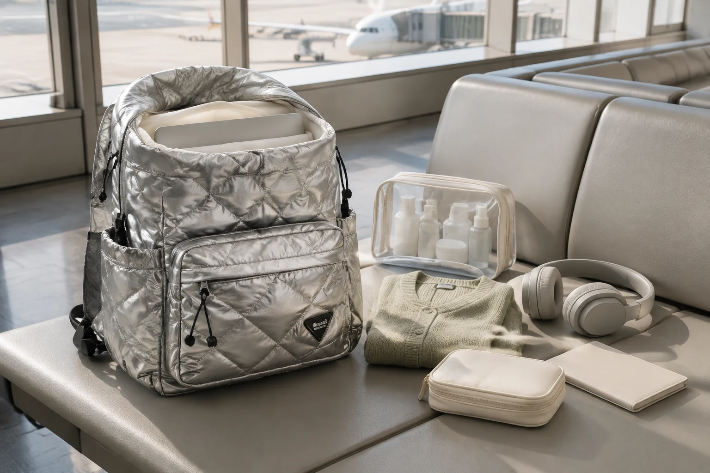

기내 반입 백팩 짐싸기: 보안검색 전에 나누는 5구역

기내 반입 백팩은 많이 담는 것보다 체크인, 보안검색, 탑승과 기내에서 필요한 물건을 제때 꺼낼 수 있게 나누는 것이 중요합니다. 항공사와 노선, 공항에 따라 휴대 수하물과 반입 물품 규정이 달라질 수 있으므로 짐을 싸기 전에 최신 공식 안내부터 확인하세요.
준비 전: 항공사와 출발·환승 공항 규정을 확인하세요
이용 항공사의 휴대 수하물 크기, 무게와 개수 기준을 예약 정보에서 확인합니다. 같은 항공사라도 운임이나 노선에 따라 조건이 다를 수 있습니다. 액체류와 보조배터리처럼 보안 규정이 적용되는 물품은 출발 공항뿐 아니라 환승 공항의 안내도 살펴보세요.
인천국제공항은 기내 반입 물품 안내와 함께 환승지 규정이 다를 수 있으므로 항공사 또는 여행사에 사전 확인하도록 안내합니다. 규정은 바뀔 수 있으므로 이 글의 숫자보다 출발 직전의 공식 정보를 기준으로 삼으세요.
1구역: 여행서류와 지갑은 몸 가까운 닫힌 포켓
여권, 지갑과 탑승에 필요한 서류는 위치를 하나로 정합니다. 바깥에서 바로 열리는 포켓보다 몸 가까이에서 지퍼로 닫을 수 있는 곳을 선택하고, 사용한 뒤에는 손에 들고 이동하지 말고 같은 자리에 바로 넣으세요. 휴대전화 속 전자 탑승권을 쓴다면 배터리 잔량도 함께 확인합니다.
2구역: 전자기기는 꺼내기 쉬운 안쪽 수납칸
노트북과 태블릿은 가방의 전용 수납 구조가 있다면 그곳에 넣고, 충전기와 플러그는 별도 파우치에 둡니다. 보안검색 과정에서 전자기기를 분리해야 하는 경우에 대비해 메인 짐을 모두 꺼내지 않고 접근할 수 있는지 확인하세요. 기기 호환 여부는 노트북 수납칸 점검표처럼 실제 치수를 기준으로 살핍니다.
3구역: 액체류는 규정에 맞춘 투명 파우치
액체류는 출발 공항과 노선의 최신 허용 기준에 맞춰 준비하고, 필요한 경우 내용물을 확인하기 쉬운 투명 파우치에 모읍니다. 가방 깊숙한 곳보다 보안검색 때 바로 꺼낼 수 있는 상단에 두되, 전자기기와 종이류에서는 분리하세요. 용기가 새지 않도록 뚜껑을 확인하고 파우치도 완전히 닫습니다.
4구역: 기내에서 쓸 물건은 작은 파우치 하나로
이어폰, 안대, 손수건, 립밤처럼 좌석에서 사용할 물건은 작은 파우치 하나에 묶습니다. 탑승 후 백팩을 선반이나 좌석 아래에 둔 다음 여러 번 꺼내지 않도록 필요한 것만 추립니다. 파우치 겉면에는 개인 정보가 드러나는 표시를 붙이지 않는 편이 좋습니다.
5구역: 겉옷은 가볍게 접어 빈 공간을 채우세요
얇은 카디건이나 스카프는 접어서 메인 공간 위쪽에 둡니다. 무거운 물건을 바깥쪽에 몰아넣지 말고, 평평한 물건은 등에 가까이 배치합니다. 귀국 후 바로 세탁할 옷은 별도 주머니로 나누되 가방을 과하게 채워 지퍼를 억지로 닫지 마세요.
출발 전 7문장 점검표
- 이용 항공사의 최신 휴대 수하물 규정을 확인했나요?
- 출발·환승 공항의 반입 물품 안내를 확인했나요?
- 여권과 지갑의 자리를 하나로 정했나요?
- 전자기기를 쉽게 꺼낼 수 있나요?
- 액체류를 다른 물건과 분리했나요?
- 기내에서 쓸 물건을 작은 파우치에 모았나요?
- 가방을 직접 메어 지퍼와 무게 균형을 확인했나요?
여행 전체 짐을 줄이는 과정이 필요하다면 1박 2일 여행 체크리스트와 매일 짐을 줄이는 수납 루틴을 함께 활용하세요.
참고·안내
- 인천국제공항 기내 반입 물품 허용 기준
- 항공보안365 기내 반입 금지물품 확인
- 휴대 수하물 크기·무게·개수는 이용 항공사의 출발일 기준 안내를 확인해 주세요.
자주 묻는 질문
백팩이면 모두 기내에 가져갈 수 있나요?
항공사와 운임, 노선에 따라 허용 크기·무게·개수가 다를 수 있습니다. 출발 전에 이용 항공사의 최신 휴대 수하물 규정을 확인하세요.
액체류는 어디에 넣는 것이 좋은가요?
출발 공항과 노선의 최신 보안 규정에 맞게 준비하고, 보안검색 때 쉽게 꺼낼 수 있는 별도 구역에 두세요. 환승지 규정도 함께 확인해야 합니다.
여권과 지갑을 백팩 바깥 포켓에 넣어도 되나요?
열린 포켓보다 몸 가까이에서 닫을 수 있고 위치를 일정하게 유지할 수 있는 구역이 좋습니다. 이동 중에는 사용 후 같은 자리에 바로 넣는 습관이 중요합니다.